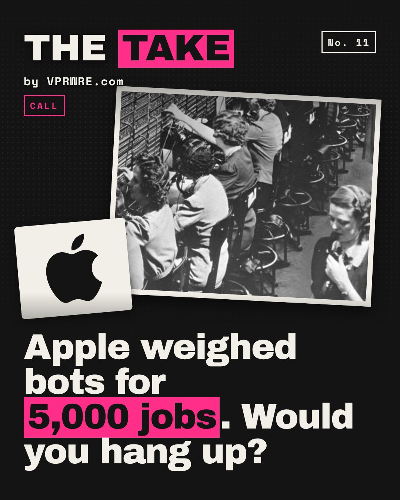

Work
Apple weighed bots for 5,000 jobs. Would you hang up?
Apple weighed bots for 5,000 jobs. Would you hang up?

Since Aug 26, Apple’s US and Canada support line has opened with a generative AI voice. On Sept 29, one Bloomberg report said Apple considered going further this summer: a plan to lay off about 5,000 AppleCare staff and lean on AI agents. It’s on hold indefinitely. Apple declined to comment, and nobody has said why it paused.
The same month, the rest of customer service picked sides. Burger King says its voice-AI pilots caused drive-offs because “guests don’t want to talk to a bot.” McDonald’s unveiled Archy, a drive-thru AI it calls 90%+ accurate. Semafor did the math: at 70 million customers a day, that’s 7 million potential errors.
Customers already voted. In a Gartner survey released Sept 2, 87% said reaching a human agent is essential. Klarna learned it first: in 2024 it said AI did the work of 700 agents. By 2025, it was hiring humans again.
Our take: a human is the premium. AI will handle the easy calls. But Apple sells $1,000 phones partly on the promise that a person picks up.
Bots are the economy seat. A human is first class.
Would you pay more to always reach a person?
The carousel
14 slides · Open on Instagram
Disclosure: VPRWRE drafts with Claude, Anthropic’s AI.